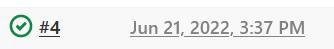

NanoSec–模拟企业网络搭建
Part 1–规划
由于实验条件限制，共准备5台机器来测试:
-
Jenkins
-
GitLab + NFS
-
Database
-
Web Servers
-
Nginx_Reverse_Proxy
其中机器3,4,5中服务均用Docker进行部署，且用Jenkins进行自动化安装Docker环境, 启动并配置容器;)

最后实现效果预测:访问Nginx反向代理可以访问到真实Web服务器的页面，Web服务器能正常访问数据库，代码以及部分配置文件使用GitLab储存，数据定时备份到备份服务器
Part 2–实验过程
本实验使用系统均为CentOS和Rocky Linux(新一代的CenOS ?)
准备工作
首先配置好5台机器的IP
Jenkins 192.168.245.137
GitLab+NFS 192.168.245.129
WebServers 192.168.245.149
DataBase 192.168.245.150
Nginx反向代理 192.168.245.151
GitLab安装
由于直接配置GitLab时我本地各种报错姿势(
就采用Docker配置了，其实Docker配置反倒方便一些= =
1
2
3
4
5
6
7
8
9
10
11
|
sudo docker run --detach \
--hostname IP or Domain \
--env GITLAB_OMNIBUS_CONFIG="external_url 'http://IP or Domain/'; gitlab_rails['lfs_enabled'] = true;" \
--publish 443:443 --publish 80:80 --publish 2222:22 \
--name gitlab \
--restart always \
--volume $GITLAB_HOME/config:/etc/gitlab \
--volume $GITLAB_HOME/logs:/var/log/gitlab \
--volume $GITLAB_HOME/data:/var/opt/gitlab \
--shm-size 256m \
gitlab/gitlab-ee:latest
|
然后就直接在浏览器访问该机器IP并按照提示配置，这里不再过多赘述
至于使用方法嘛。。。和世界上最大的同性交友平台GitHub差不多
Jenkins安装
由于Jenkins依赖Java环境，先安装Java
1
|
yum -y install java-11-openjdk
|
接下来导入Jenkins官方源
1
|
sudo wget -O /etc/yum.repos.d/jenkins.repo https://pkg.jenkins.io/redhat-stable/jenkins.repo
|
导入Jenkins密钥
1
|
sudo rpm --import https://pkg.jenkins.io/redhat-stable/jenkins.io.key
|
终于可以安装啦uwu
安装完之后可不要忘记启动并启用服务哦 ;D
P.S. 启动服务:使服务立刻运行起来，启用服务:使服务开机自启
1
2
|
systemctl start jenkins
systemctl enable jenkins
|
最后即可在ip:8080访问Jenkins了喵
Jenkins配置
在自定义Jenkins那步选择安装推荐的插件，这样你之后可以少很多折腾

然后就是安装其他配置自动化需要的插件(Ansible, SSH)了
去到http://ip:8080/pluginManager/(即Manage Jenkins下的Plugin Manager)
然后在Available一栏搜索SSH和Jenkins
一个小提醒:SSH插件存在已知漏洞，从安全角度考虑生产环境请慎用(指可以找到这些漏洞的临时缓解方案)，在实验里我偷个小懒

要是想要节省时间，选中两个插件之后选择Install without restart

安装完成之后该配置各个插件了uwu
SSH
去到http://ip:8080/configure或在网页点击Manage Jenkins –>Configure System
在这一界面下滑直到看到SSH remote hosts

然后点击下方的Add进行配置
这里注意，如果是第一次使用，需要添加新的认证信息

如果你想使用用户名，密码来认证的化，选择Username with password,然后填好你的用户名，密码
注意，你要用自动化配置的几台机器的账号密码须一样

然后点下方的check connection检查连接,如果看到提示Successfull connection即为连接成功，然后点击Apply- ->Save即可完成ssh配置
Ansible
如果要使用Ansible插件，你必须机器(注意是装有Jenkins的机器)上安装有Ansible
Tip:Ansible是一个批量自动化管理多台机器的工具
Ansible在epel源里才有，所以先安装epel源
1
|
yum -y install epel-release
|
安装Ansible
下面配置Ansible插件
去到http://ip:8080/configureTools/，或者网页上Manage Jenkins - -> Global Tool Configuration
下划到Ansible区域，点击Add Ansible

分别添加ansible和ansible-playbook,默认他们的路径都安装在/usr/bin下，如果不放心可以用which命令检查
1
2
|
which ansible
which ansible-playbook
|
注意这里的安装路径写到可执行文件所在目录
比如说我的ansible是/usr/bin/ansible,我只需要填/usr/bin


Ansible有个小坑，就是它不会说"是"
为什么这么说捏
因为当SSH询问是否需要将新的主机添加到known_hosts时Ansible无法回应,那就只有报错辣;(

嘛= =那就帮帮Ansible吧，让它省去烦人的说"是"的步骤
在装有Jenkins和Ansible的机器上完成:
然后将/etc/ssh/ssh_config 内容中的StrictHostKeyChecking 值为no ,让机器自动接受证书
注意去掉这一行前的注释符#

别忘了关键的重启一步喵~~
NFS安装和配置
安装
由于rpc-bind是NFS的依赖项，必须先安装
1
|
dnf -y install rpcbind nfs-utils
|
然后启动rpc-blind和NFS服务(rpc-bind服务一定先启动)
1
2
3
4
|
systemctl start rpcbind
systemctl start nfs-server
systemctl enable rpcbind
systemctl enable nfs-server
|
配置
由于我们的NFS是用来备份数据库的，所以建一个名为DB_Backup的备份文件夹
然后修改配置文件
输入如下内容:
1
|
/DB_Backup 192.168.245.1/24(sync,ro) 192.168.245.150(sync,rw,no_root_squash)
|
至于配置文件里里东西的含义，可以看下文
出于安全角度角度，只给192.168.245.150即存放数据库的机器写权限
当然，no_root_squash参数最好也不要使用
编辑配置文件完成后，需要运行exportfs重新发布所共享的目录
当然也可以重启服务，不过记得先重启rpcbind
实现自动化安装环境
我们梳理一下思路，我们现在大概可以想到两种方案
方案猜想
第一种就是直接用SSH插件:不断添加构建步骤在不同机器上进行安装


这个方法想想是没什么问题，但绝对不是适合我们这种懒人的哒= =
因为一旦设备数足够多，工作量就会巨大，费时费力
第二种方法则是通过ansible插件结合Jenkins和ansible来完成批量自动化，用一个构建步骤就可以在n台机器上运行脚本，而我们只需要提供运行的命令和所有机器的ip就好了
绝对是效率贼高的偷懒摸鱼小妙招
开始施工awa
ok,现在我们想好了方案，接下来要做的就是新建一个Jenkins项目然后进行配置
回到Dashboard- ->New item新建一个项目
给项目起一个合适的名字(比如说用来安装环境的项目叫做Install),然后选Freestyle Project,然后再傻瓜式地点OK

然后Add build step->Invoke Ansible Ad-Hoc Command(调用Ansible临时命令)

接下来这样填空
P.S.如果你不需要使用编程语言来生成IP列表,
请不要勾选下方的Dynamic inventory

Content填你需要执行命令机器的IP,一行一个Module填shellModule arguments or command to execute填你要执行的命令,我们这里是要为3台机器配置Docker运行环境
1
2
3
4
5
6
|
yum install -y yum-utils
yum-config-manager --add-repo https://download.docker.com/linux/centos/docker-ce.repo
yum install -y docker-ce docker-ce-cli --allowerasing
systemctl start docker
systemctl enable docker
docker pull centos
|

Credentials选我们前面在配置SSH插件的适合创建的那个- 其他的东西保持默认

然后就是Apply+Save一把梭= =
然后回到项目主界面之后捏，点Build Now
就是那个上面有绿绿三角形的钟~~(要是你理解为其他的东西也可以~~

要是你运气好，没报错，就能看到一个绿绿的勾

要是BUG满天飞，就会是一个红红火火的x
假设现在已经运行成功并且没有任何报错，右键build编号，点Console Output查看控制台输出

到现在为止，我们3台机器上已经安装好了Docker环境并拉去了centos镜像
部署Web Server
我的内心是崩溃的，Docker对于我这种菜狗就全都是坑 = =
思路
我这边的实验能是打算用Docker搭一个LNMP架构，再安装WordPress,
当然啦，用Docker也可以搭建其他网站架构
Jenkins新建一个新项目
建项目的流程和上面配置自动化安装基本一样，就是把机器ip和代码替换掉就可以了
LNMP
在这个过程中真的踩到无数的坑，可能是因为Docker这个镜像精简的feature吧，很多最最基础的东西都没有= =
不管怎么说，先启动Docker,再映射到一个吉利的端口 (顿时接地气了起来，咳咳= =
1
|
docker run --name LNMP -p 8888:80 -d -t centos:latest
|
至于为什么不直接pull nginx的镜像，是因为想统一用yum包管理器，而nginx镜像是apt包管理器= =
第一个坑:容器无法正常启动
你会注意到上面启动容器的命令里包含了-t参数，
为什么咧????
– 因为不加上centos镜像启动的容器会立刻停止运行

第二个坑:无法使用Yum源
太狗了! 容器里的yum源用不了= =
报错如下:
1
2
3
|
Failed to set locale, defaulting to C.UTF-8
CentOS Linux 8 - AppStream 57 B/s | 38 B 00:00
Error: Failed to download metadata for repo 'appstream': Cannot prepare internal mirrorlist: No URLs in mirrorlist
|
看到这个报错，我直接炸毛= =
刚开始还以为源的URL没有加上，后来发现是因为AppStream的mirrorlist里URL用不了
在/etc/yum.repos.d/CentOS-Linux-AppStream.repo文件中官方友情提醒了我们
1
2
|
# If the mirrorlist does not work for you, you can try the commented out
# baseurl line instead.
|
所以我们只需要把mirrorlist那一行注释掉并且取消baseurl的注释
因为我们是在Jenkins里自动化，很显然不能用vim,就改用下面这种方法
注意:自动化也导致不能docker exec -ti 容器名 /bin/bash调出交互终端
1
2
|
docker exec -it LNMP sh -c "sed -i 's/mirrorlist/#mirrorlist/g' /etc/yum.repos.d/CentOS-*"
docker exec -ti LNMP sh -c "sed -i 's|#baseurl=http://mirror.centos.org|baseurl=http://vault.centos.org|g' /etc/yum.repos.d/CentOS-*"
|
P.S. 使用sh -c "内容"的原因是不放在引号里Docker exec会把后面一团东东当成两条命令执行
第三个坑:systemctl报错
在一番快乐的安装之后
1
2
3
|
docker exec -ti LNMP yum makecache
docker exec -ti LNMP yum -y install nginx
docker exec -ti LNMP yum -y install php*
|
该到了启动和启用服务的时候了
1
2
3
4
|
docker exec -ti LNMP systemctl start php-fpm
docker exec -ti LNMP systemctl enable php-fpm
docker exec -ti LNMP systemctl start nginx
docker exec -ti LNMP systemctl enable nginx
|
然后"啪!“就是一个报错
好家伙! systemctl都用不了!!! 震怒)
1
2
|
System has not been booted with systemd as init system (PID 1). Can't operate.
Failed to connect to bus: Host is down
|
还好有GayHubGitHub上大佬的Docker systemctl替代品
1
2
3
4
|
docker exec -ti LNMP yum -y install wget
docker exec -ti LNMP yum -y install python3
docker exec -ti LNMP sh -c "wget https://raw.githubusercontent.com/gdraheim/docker-systemctl-replacement/master/files/docker/systemctl3.py -O /usr/local/bin/systemctl"
docker exec -ti LNMP sh -c "chmod +x /usr/local/bin/systemctl"
|
小提醒:GitHub的raw应该是被gfw给挡住了，所以可能要给Docker配置代理
部署WordPress
因为我们要从GitHub拉取Wordpress源码(或者从内部的GitLab拉取代码)
先给容器安装Git
1
|
docker exec -ti LNMP yum -y install git
|
然后再把原先nginx默认的一些网页文件删除
1
|
docker exec -ti LNMP sh -c "rm -rf /usr/share/nginx/html/*"
|
拉取WordPress
1
|
docker exec -ti LNMP sh -c "git clone https://github.com/WordPress/WordPress.git /usr/share/nginx/html/"
|
然后就可以访问机器ip开始安装WordPress啦

又双叒叕踩坑啦:WordPress权限不足
你需要在Jenkins中提前让WordPress目录对于所有用户可写
1
|
docker exec -ti LNMP sh -c "chmod -R 777 /usr/share/nginx/html/"
|
否则就不能自动化了qeq

输入已经配置好的数据库信息
数据库配置见下文

自动化花里胡哨
嘿嘿，最后给配个主题，让我的实验kawaii起来~~
1
|
docker exec -ti LNMP sh -c "git clone https://github.com/mashirozx/sakura.git /usr/share/nginx/html/wp-content/themes/Sakura/"
|

附上代码
1
2
3
4
5
6
7
8
9
10
11
12
13
14
15
16
17
18
19
|
docker run --name LNMP -p 8888:80 -d -t centos:latest
docker exec -it LNMP sh -c "sed -i 's/mirrorlist/#mirrorlist/g' /etc/yum.repos.d/CentOS-*"
docker exec -ti LNMP sh -c "sed -i 's|#baseurl=http://mirror.centos.org|baseurl=http://vault.centos.org|g' /etc/yum.repos.d/CentOS-*"
docker exec -ti LNMP yum makecache
docker exec -ti LNMP yum -y install nginx
docker exec -ti LNMP yum -y install php*
docker exec -ti LNMP yum -y install wget
docker exec -ti LNMP yum -y install python3
docker exec -ti LNMP yum -y install git
docker exec -ti LNMP sh -c "wget https://raw.githubusercontent.com/gdraheim/docker-systemctl-replacement/master/files/docker/systemctl3.py -O /usr/local/bin/systemctl"
docker exec -ti LNMP sh -c "chmod +x /usr/local/bin/systemctl"
docker exec -ti LNMP systemctl start php-fpm
docker exec -ti LNMP systemctl enable php-fpm
docker exec -ti LNMP systemctl start nginx
docker exec -ti LNMP systemctl enable nginx
docker exec -ti LNMP sh -c "rm -rf /usr/share/nginx/html/*"
docker exec -ti LNMP sh -c "git clone https://github.com/WordPress/WordPress.git /usr/share/nginx/html/"
docker exec -ti LNMP sh -c "chmod -R 777 /usr/share/nginx/html/"
docker exec -ti LNMP sh -c "git clone https://github.com/mashirozx/sakura.git /usr/share/nginx/html/wp-content/themes/Sakura/"
|
部署MariaDB数据库
老规矩:Jenkins新建项目
不过有了前面的经验之后，这边可以偷个小懒，嘿嘿嘿
细心的朋友们可以发现，在新建项目的时候还可以用之前的项目作为模版

我们就以刚刚配置的Web Server作为模板
点OK创建之后你会看见和一个和Web Server项目配置相同的新项目
接下来也是老样子:修改IP和代码

配置数据库
现在在之前配置Web Server的代码基础上进行修改
P.S.:建议把容器名进行修改，并起一个易于识别的名字
3306端口
既然是MariaDB数据库(和MySQL基本相同)，那就需要映射3306到端口
为了之后备份的方便，我们映射一个目录/mnt/backup
1
2
|
mkdir /mnt/backup
docker run --name MySQL -p 3306:3306 -d -t -v /mnt/backup:/mnt/backup centos:latest
|
关于安装
这里轻松多啦，我们已经解决了前面所提及的几个大坑，
仔细思考，因为在这里只需要部署数据库，前面安装PHP和Nginx的代码可以干掉啦qwq
注意：记得保留前面解决坑所需的代码= =
然后换成安装MariaDB的代码
1
|
docker exec -ti MySQL yum -y install mariadb mariadb-server
|
启动并启用数据库服务
1
2
|
docker exec -ti MySQL systemctl start mariadb
docker exec -ti MySQL systemctl enable mariadb
|
配置
因为我们是自动化，所以不能用之前一贯的方法调出MariaDB的交互式控制台
那么，就直接在命令行执行SQL语句吧
1
|
mysql -u 用户名 -p密码 -e "语句"
|
注意初始状态的MariaDB是没有密码的，
毕竟我们是网安人嘛，为了安全性肯定要设置密码= =
1
|
docker exec -ti MySQL mysql -e "ALTER USER 'root'@'localhost' IDENTIFIED BY '你的密码';"
|
因为需要让跑Web Server的那台机器访问到数据库，我们进行配置一下权限，顺便再建一个叫做DB的数据库(以存放WordPress的数据)
为了安全性，我们只许可Web Server的机器用root的用户名和密码登陆
注意这里指mysql的root用户，和系统的root用户不一样哦 - -
1
|
docker exec -ti MySQL mysql -u root -p123.密码 -e "use mysql; GRANT ALL PRIVILEGES ON *.* TO 'root'@'ip'IDENTIFIED BY '密码' WITH GRANT OPTION; flush privileges; create database db;"
|
备份
好啦，最后要做的就是定时备份数据库
毕竟数据无价是真理嘛awa
首先给数据库的主机装个NFS客户端并每次启动时挂载共享文件夹
1
2
3
4
5
|
yum -y install nfs-utils
mount.nfs IP:/DB_Backup /mnt/backup/
echo 'mount.nfs IP:/DB_Backup /mnt/backup/' >> /etc/rc.local
echo 'docker start MySQL' >> /etc/rc.local
chmod +x /etc/rc.local
|
现在来到容器内部完成真正定时"备份"的操作
我们决定每天备份一次数据库，这个时候小小偷个懒，不用crontab -e了，直接将脚本放到/etc/cron.daily
我们可以把备份的脚本放在GitLab里
1
2
3
4
5
|
#!/bin/bash
mysqldump -u root -p密码 --all-databases > /db/data-dump.sql
date="$(date +%F)"
cp /db/data-dump.sql /mnt/backup/DB_$date
rm -rf /db/data-dump.sql
|

由于我们脚本里需要用到/db目录，我们得先建
1
|
docker exec -ti MySQL sh -c "mkdir /db"
|
然后就git pull到/etc/cron.daily目录并赋予适当权限(记得先在容器里安装git哦)
1
2
3
|
docker exec -ti MySQL yum -y install git
docker exec -ti MySQL sh -c "git clone http://IP/nanosec/backup.git /etc/cron.daily/"
docker exec -ti MySQL sh -c "chmod +x /etc/cron.daily/backup.sh"
|
然后可以先运行一下看看是否备份成功
1
|
docker exec -ti MySQL sh -c "/etc/cron.daily/backup.sh"
|


附上代码
1
2
3
4
5
6
7
8
9
10
11
12
13
14
15
16
17
18
19
20
21
22
23
24
|
mkdir /mnt/backup
yum -y install nfs-utils
mount.nfs 192.168.245.129:/DB_Backup /mnt/backup/
echo 'mount.nfs 192.168.245.129:/DB_Backup /mnt/backup/' >> /etc/rc.local
echo 'docker start MySQL' >> /etc/rc.local
chmod +x /etc/rc.local
docker run --name MySQL -p 3306:3306 -d -t -v /mnt/backup:/mnt/backup centos:latest
docker exec -it MySQL sh -c "sed -i 's/mirrorlist/#mirrorlist/g' /etc/yum.repos.d/CentOS-*"
docker exec -ti MySQL sh -c "sed -i 's|#baseurl=http://mirror.centos.org|baseurl=http://vault.centos.org|g' /etc/yum.repos.d/CentOS-*"
docker exec -ti MySQL yum makecache
docker exec -ti MySQL yum -y install mariadb mariadb-server
docker exec -ti MySQL yum -y install wget
docker exec -ti MySQL yum -y install python3
docker exec -ti MySQL yum -y install git
docker exec -ti MySQL sh -c "wget https://raw.githubusercontent.com/gdraheim/docker-systemctl-replacement/master/files/docker/systemctl3.py -O /usr/local/bin/systemctl"
docker exec -ti MySQL sh -c "chmod +x /usr/local/bin/systemctl"
docker exec -ti MySQL systemctl start mariadb
docker exec -ti MySQL systemctl enable mariadb
docker exec -ti MySQL mysql -e "ALTER USER 'root'@'localhost' IDENTIFIED BY '密码';"
docker exec -ti MySQL mysql -u root -p密码 -e "use mysql; GRANT ALL PRIVILEGES ON *.* TO 'root'@'IP'IDENTIFIED BY '密码' WITH GRANT OPTION; flush privileges; create database db;"
docker exec -ti MySQL sh -c "mkdir /db"
docker exec -ti MySQL sh -c "git clone http://192.168.245.129/nanosec/backup.git /etc/cron.daily/"
docker exec -ti MySQL sh -c "chmod +x /etc/cron.daily/backup.sh"
docker exec -ti MySQL sh -c "/etc/cron.daily/backup.sh"
|
配置Nginx反向代理
呼，最后的工作则是配置Nginx反向代理
(心里:aaaaaaa总算熬到头了)
Jenkins项目
到这里应该已经成为"老油条"了，
直接利用模板+修改一把梭
最后大概确定应该肯定是这样纸捏

部署Nginx反向代理
为了用户访问方便，这次直接映射到80端口
1
|
docker run --name N_Proxy -p 80:80 -d -t centos:latest
|
安装
Nginx反代嘛= =
当然就是要装Nginx
1
|
docker exec -ti N_Proxy yum -y install nginx
|
然后就是日常对服务的操作
1
2
|
docker exec -ti N_Proxy systemctl start nginx
docker exec -ti N_Proxy systemctl enable nginx
|
配置
老样子，先把默认的网站文件删除
1
|
docker exec -ti N_Proxy sh -c "rm -rf /usr/share/nginx/html/*"
|
然后就到了最关键一步，配置文件的调整
为了之后修改配置文件能够优雅地偷懒，我们将配置文件托管在GitLab上
1
2
3
4
5
6
7
8
9
10
11
12
13
14
15
16
17
18
19
20
21
22
23
24
25
26
27
28
29
30
31
32
33
34
35
36
37
38
39
40
41
42
43
44
45
46
47
48
49
50
51
52
53
54
55
56
57
58
59
|
user nginx;
worker_processes auto;
error_log /var/log/nginx/error.log;
pid /run/nginx.pid;
# Load dynamic modules. See /usr/share/doc/nginx/README.dynamic.
include /usr/share/nginx/modules/*.conf;
events {
worker_connections 1024;
}
http {
log_format main '$remote_addr - $remote_user [$time_local] "$request" '
'$status $body_bytes_sent "$http_referer" '
'"$http_user_agent" "$http_x_forwarded_for"';
access_log /var/log/nginx/access.log main;
sendfile on;
tcp_nopush on;
tcp_nodelay on;
keepalive_timeout 65;
types_hash_max_size 2048;
include /etc/nginx/mime.types;
default_type application/octet-stream;
# Load modular configuration files from the /etc/nginx/conf.d directory.
# See http://nginx.org/en/docs/ngx_core_module.html#include
# for more information.
include /etc/nginx/conf.d/*.conf;
#include /etc/nginx/default.d/*.conf;
upstream web1 {
server 192.168.245.149:8888 weight=1; #此处填写被代理服务器IP
#server 192.168.0.17 weight=1;
#ip_hash;
}
server{
listen 80;
server_name blog.nanosec.io;
access_log /var/log/nginx/blog.log;
location / {
root /home/web1_root;
proxy_pass http://web1;
proxy_read_timeout 300;
proxy_connect_timeout 300;
proxy_redirect off;
proxy_set_header X-Forwarded-Proto $scheme;
proxy_set_header Host $http_host;
proxy_set_header X-Real-IP $remote_addr;
proxy_set_header X-Forwarded-For $proxy_add_x_forwarded_for;
}
}
}
|
 我们先把原有的配置文件干掉
我们先把原有的配置文件干掉
1
|
docker exec -ti N_Proxy sh -c "rm -rf /etc/nginx/nginx.conf"
|
然后再放上新的配置文件
注意：因为git clone无法clone进一个已经存在的目录
所以我们需要先clone到一个其他位置并进行移动
1
2
|
docker exec -ti N_Proxy sh -c "git clone http://192.168.245.129/nanosec/your-code-here.git"
docker exec -ti N_Proxy sh -c "cp /your-code-here/nginx.conf /etc/nginx/"
|
检查配置文件是否存在问题
1
|
docker exec -ti N_Proxy nginx -t
|
检查无误后再重新加载配置文件
1
|
docker exec -ti N_Proxy nginx -s reload
|
完工
这个时候就可以让这个项目跑起来啦awa

到这里我们访问反向代理的ip或者把blog.nanosec.io解析到这个ip后访问就可以看到Web Server的那个网页啦


Part3–结语
Hmmm,这样一个有意思的自动化企业网络架构部署到这里就完成了
优势
可以说是为运维带来了很大的便捷，一旦机器多起来一台一台装显得费时费力又不现实，
自动化通过按几个键就能完成部署，在很大程度上提高了效率 = =

以后的维护也是变得特别简单了
- 要是代码和配置文件需要更改直接去GitLab改
- 要是一些配置步骤需要微调直接在Jenkins上操作
- 新加入的机器只需要按几个键就可以完成部署
一些思考
关于本方案如何改进
- 使用ZStack私有云，在与Docker共度了几个夜晚之后，我发现如果在拥有足够的性能条件下，还是使用虚拟机比较好，至于原因嘛，一是对于新手来说友好，配置/使用更加方便，二是安全性更高，毕竟虚拟机逃逸比容器逃逸要困难
本次实验由于性能问题，没带动ZStack(悲
- 可以把Jenkins里配置的命令集合成脚本，并也托管到GitLab上，这样后期维护会更加便捷
- 备份最好独立一台机器，并把GitLab和Jenkins里的东西也做相应备份
关于安全的思考
怎么说呢。。。这种事情就把所有机器的权限高度集中在一个地方了，这实际上在某种意义上也是十分危险的= =
因为一旦集中权限的机器被入侵，那就是"全都没了"的惨剧了
就举个最简单的例子，Jenkins机器放到了公网上，而且还是弱密码= =
当然，从攻击者的角度，可以考虑对于权限集中的地方下手;)
Part 4 – Ref
http://book.fsec.io/